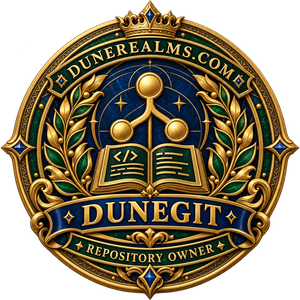
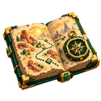

RECOMMENDED START
Complete expedition kit
Get the complete installer and JAR bundle from a published DuneGit release.
Browse releases Read the release notes for included versions and setup instructions.DUNEREALMS / DEVELOPER RESOURCES
The DuneRealms suite, installer and source — together on DuneGit.
THE CARAVAN QUARTERMASTER
Choose your package. Prepare your server. Bring the realms to life.

RECOMMENDED START
Get the complete installer and JAR bundle from a published DuneGit release.
Browse releases Read the release notes for included versions and setup instructions.
EXISTING SERVER
Choose the server JAR archive when you already manage your own Paper installation.
View server packages →
BUILD & CONTRIBUTE
Explore the suite, inspect changes or work on the installer.
Plugin source →Installer source →Stop Paper. Back up worlds, plugin data and your database before installing or upgrading.
Follow the release instructions. Add Vault and the supplied plugin JARs to plugins/; keep one JAR per plugin.
Configure backend planets, restart and enable DuneResourcePack.zip on clients. Begin with /dune help.
Use one Paper backend per planet behind Velocity, matching planet IDs and proxy server names. Enable BungeeCord plugin-message compatibility. Consult the manual for PostgreSQL, travel, persistence and prototype limits.
The pack supports vanilla and Fabric Java 1.21.4 clients. Place the ZIP in .minecraft/resourcepacks and enable it in Options. Check each release for current compatibility notes.